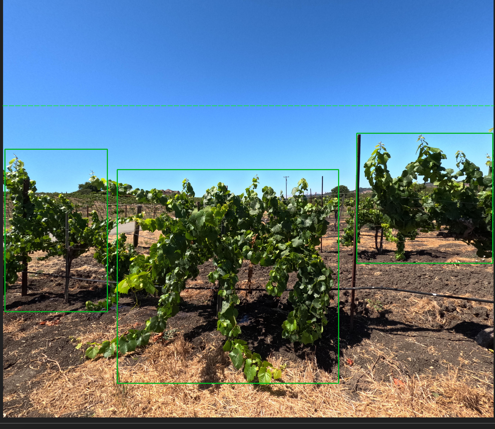

Labeling Image Datasets, Future of Labeling, Evaluating
August 17, 2025
Today I got familiar with a new tool called AnyLabeling which is used for labeling images for YOLO training. The tool is pretty simple to use and actually doesn't require any coding which is cool. I also noticed that, while I only labeled a couple things, that the process could be very very tedious if the dataset was huge. Here is a quick picture

On that note, there is a feature called autolabel. You select a model, object detection or segmentation, and it automatically labels the data for you. However, I noticed the provided models weren't labeling the dataset so I used the model that was already trained. From this, I saw improvements, but decided to label everything anyway since the dataset was small and I wanted to make sure the accuracy was good. However, using a competent model to autolabel in the future will be needed. I'm curious why the pretrained models like Yolov8l, even the huge ones, couldn't even label a canopy. Maybe it was my system.
Shortly about the autoloading, to load a model into anylabel it requires me to use a version of .pt file .onnx. It also requires me to use the config.yaml file when loading it in. I wrote something so that it can convert any model into onnx and yaml file -- I figured that eventually we would want to autolabel datasets so I wrote it just in case.
I'm also interested in finding out ways to test model performance. I think for my own interest I will look into that soon, I know there are commands like yolo evaluate and so forth.